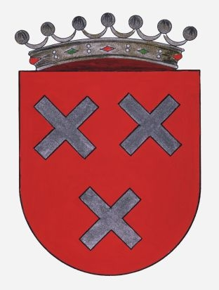

het "schuinkruis" in de heraldiek: In het standaardwerk 'Handboek der Wapenkunde' van Johannes Baptista Rietstap, herwerkt door Cornelis Pama (orig.1857, uitgave 1943), Tweede Deel 'Practijk der Wapenkunde', Hoofdstuk IV 'Heraldieke hoofdfiguren', vinden we het volgende:
schuinkruis , saltire (eng.), sautoir (fr.): bron: heraldica.org

Het schuinkruis is een vaak voorkomend stuk in de heraldiek. Zoeken in het uitgebreide heraldische wapenregister van het CBG (Centrum voor Familiegeschiedenis, vroeger Centraal Bureau Genealogie) op het woord 'schuinkruis' geeft ongeveer 800 resultaten (van de ruim 30.000 opgenomen familiewapens).
Merk op dat ongeveer 50 van deze resultaten eigenlijk de combinatie 'verkort schuinkruis' bevat (zie verder),
en ook de combinaties 'versmald schuinkruis', 'horizontaal afgesneden schuinkruis', enz zitten er mee in.
https://cbgfamiliewapens.nl/zoeken?search=schuinkruis&collection=Familiewapens&view=cbgsearch&search_s_genre=wapens
schuinkruisje, saltorel (eng.), flanchi (fr.):
bron: heraldica.org
Het schuinkruis met verkorte armen is algemeen iets minder gebruikt, maar in de Nederlanden toch nog redelijk vaak voorkomend, en blijkbaar toch ook niet erg gestandardiseerd.
In bovenstaand boek van Rietstap is het als volgt omschreven:
"Dikwijls komen zeer kleine en dun geteekende St. Andrieskruisen in een wapen voor. Deze heeten dan ST. ANDRIESKRUISJES, Fr. 'flanchis', Eng. 'saltorels'. Indien zij grooter zijn en in verhouding tot het groote St. Andrieskruis staan zooals het Grieksche kruis tot het gewone kruis, dan noemt men ze verkorte St. Andrieskruisen, Fr. 'sautoirs alésés' ".
Als we dan dit 'Grieksche kruis' opzoeken in hetzelfde boek van Rietstap, vinden we:
"Het GRIEKSCHE KRUIS (Fr. croix grecque) is een gewoon doch aanmerkelijk verkort kruis, waarvan er doorgaans meer dan één in 't schild voorkomt. Zij zijn zwaarder en grooter dan de kruisjes, doch verschillen daarvan niet in algemeenen vorm."
Rietstap vermeld echter ook:
"Het VERKORTE KRUIS (Fr. croix alésée, Eng. cross humetté of couped, Hd. schwebendes of abgeledigtes Kreuz) is een gewoon effen kruis, doch met armen, die de schildranden niet raken en wier uiteinden regt afgesneden zijn."
Een 'verkort St.Andrieskruis' of 'sautoir alése' wordt dus door Rietstap beschreven als te vergelijken met het Grieks kruis, zijnde een "aanmerkelijk verkort kruis", terwijl 'verkort' of 'alésée' betekent 'de schildranden niet rakend'.
Dit is dus eigenlijk niet zo duidelijk.
Zoals ik het interpreteer zijn er dus twee mogelijkheden:
1:verkort schuinkruis (en dus niet 'geknot'), verkort St.Andrieskruis, sautoir alésé ('Heraldique: Qualifie une pièce d'un blason qui ne touche pas les bords de l'ecu.), saltire couped, ...
2: schuinkruisje, St.Andrieskruisje, flanchi, saltorel, ...
Zoeken in bv. het wapenregister van het CBG op het woord 'verkort schuinkruis' geeft ongeveer 50 resultaten:
(Voor de volledigheid: deze zaten natuurlijk ook al in de boven genoemde resultaten bij zoeken op 'schuinkruis'.)
https://cbgfamiliewapens.nl/zoeken?search=verkort%20schuinkruis&collection=Familiewapens&view=cbgsearch&search_s_genre=wapens
Zoeken in ditzelfde wapenregister maar nu op het woord 'schuinkruisje' geeft een 80-tal resultaten, en met 'schuinkruisjes' krijgen we zelfs meer dan 380 resultaten:
https://cbgfamiliewapens.nl/zoeken?search=schuinkruisje&collection=Familiewapens&view=cbgsearch&search_s_genre=wapens
https://cbgfamiliewapens.nl/zoeken?search=schuinkruisjes&collection=Familiewapens&view=cbgsearch&search_s_genre=wapens
Als we deze zoekresultaten met elkaar vergelijken dan valt het op dat de omschrijvingen 'schuinkruisje' en 'verkort schuinkruis' niet duidelijk afgescheiden zijn, en vaak door elkaar gebruikt worden:
"Eijck": in zwart een schuinkruisje vergezeld in de hoeken van een klaverblad, alles goud.
"Geelen": in rood een verkort schuinkruis, vergezeld van vier ringen, alles goud.
"In keel een pal van sabel, beladen met 3 verkorte St.Andrieskruisen van zilver, paalsgewijze gerangschikt.
Het schild gedekt met de Rudolphinische Keizerlijke kroon en van weerszijden vastgehouden door twee van keel getongde leeuwen in natuurlijke kleur,
staande op een piedestal of console, vergezeld van het devies 'Heldhaftig - Vastberaden - Barmhartig '."
KB van 29 maart 1947
bron: https://heraldry-wiki.com/heraldrywiki/index.php?title=Amsterdam
idem
bron: https://nl.wikipedia.org/wiki/Wapen_van_Amsterdam

"In keel drie schuinkruisjes van zilver.
Het schild van achter gehouden door een engel van natuurlijke kleur en van terzijde door twee leeuwen van goud, getongd en genageld van keel;
het geheel rustende op een geopende stenen burcht van keel, met voegen van zilver en daken en torenhelmen van azuur."
KB van 25 november 1991
bron: https://heraldry-wiki.com/heraldrywiki/index.php?title=Breda_(Noord_Brabant)
idem
bron: https://nl.wikipedia.org/wiki/Wapen_van_Breda

"In keel drie Sint-Andrieskruisjes van zilver. Het schild getopt met een baronnenkroon."
bron: https://www.sarovlaanderen.be/schoten-2
(wapenregister Vlaamse Heraldische Raad)